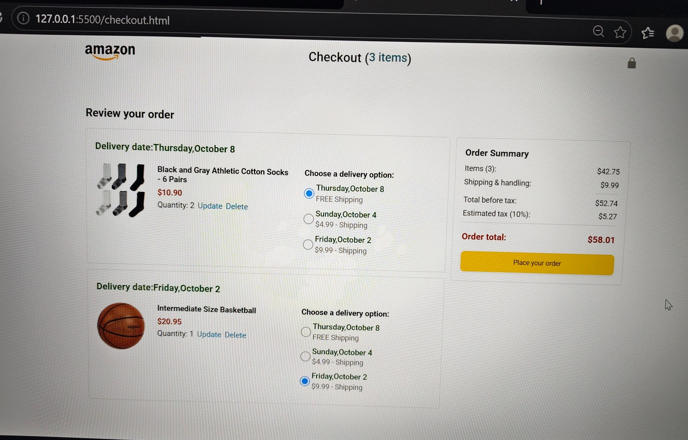

Context
Product-heavy pages can quickly become cluttered without a clear layout and hierarchy.
A responsive e-commerce style web application focused on clean UI, product presentation, responsive layouts and practical JavaScript interactions.
The goal is to turn an e-commerce concept into a responsive interface with clear product sections, useful interactions and a consistent visual hierarchy.
Product-heavy pages can quickly become cluttered without a clear layout and hierarchy.
Use reusable UI patterns, responsive CSS and JavaScript interactions to keep the experience focused.
A cleaner understanding of how structure, styling and interaction combine into a complete frontend.
The frontend can be understood as a flow from structure to styling to interaction.
Page sections, product content and semantic layout.
Responsive grid, spacing, cards and visual hierarchy.
Interactive behavior and client-side UI logic.
Connect the pieces into a clear shopping flow.
Adapts content across desktop, tablet and mobile screen sizes.
Organizes product information into clear visual blocks.
Uses JavaScript to support practical frontend interactions.
Keeps navigation, product content and actions easy to scan.
Consistent cards, buttons, spacing and typography support maintainability.
Separates markup, styling and behavior into understandable pieces.
Real screenshots from the E-Commerce project, showing the product listing and checkout experience.


The main challenge is keeping layout, spacing and interactions aligned while the available screen space changes.
The project strengthened my understanding of how HTML, CSS and JavaScript work together and why reusable visual patterns matter.